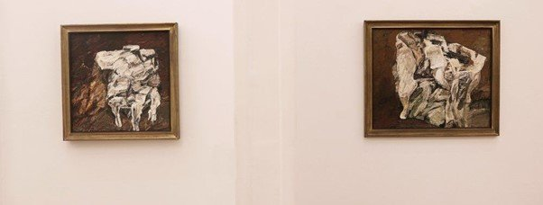
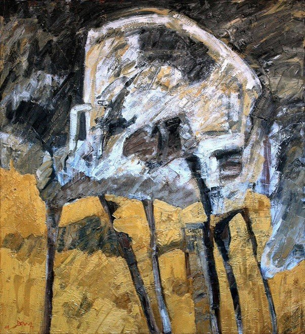
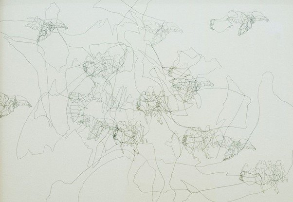

Originally published in Mada Masr on 14 May 2017
By Ismail Fayed

Islam Zaher works at Gypsum Gallery, exhibition view
Both Islam Zaher and Doa Aly, born in 1972 and 1976 respectively, are graduates of Helwan University's Faculty of Fine Arts, and their practices question the boundaries between contemporary art and more "classical" or academic approaches. This makes their current exhibition at Gypsum Gallery, Remnants of Enchantment, a two-person show but one in which the works are physically separated, an interesting choice. It is the first time Gypsum has displayed the works of two artists in clear reference to their educational background and the kind of artistic styles such training might engender.
It was only a matter of time before Zaher's work made its way out of the more state-centric circles of art exhibiting and collecting, such as the Palace of the Arts and the Cairo Atelier. As technologically-inclined aesthetics took over Cairo's indie art scene by the late 1990s, artists like Zaher, whose primary interest is painting and the possibilities for understanding forms via that specific process of image making, may have been overlooked by those interested in progressive contemporary practices.
Notably, rather than more avant-garde references like US artist Allan Kaprow, who contributed to the dematerialization of art, invented the performance art genre of the "happening" in the 1960s and who inspired an exhibition in Cairo's Contemporary Image Collective, A Fantasy for Allan Kaprow, Zaher is easily placed in reference to a school of British figurative painters who started working in the 1950s: Frank Auerbach, Lucian Freud and Leon Kossof. I think there are similarities in the way those painters responded to post-WWII Britain and Zaher's motivations. Both positions grew out of a rejection of pre-existing artistic concerns, yet rather than move beyond a traditional medium they chose to expand its possibilities to correspond to artistic visions growing out of problematic political and social contexts. Zaher grew up during the demise of the post-independence state as it transformed into a neoliberal hybrid deeply at odds with itself.

Islam Zaher, Study of a Stale Interior with a Chair – VIII, 2017, oil on canvas, 100 x 110 cm

Islam Zaher, detail showing paint materiality and texture
Superficially expressionistic in style, Zaher's semi-abstract paintings of objects such as furniture are fundamentally experiments in texture and color, creating a series of canvases teeming with tactile and visual surprises: the paint's materiality, thickly layered, gives a sense of volumetric distinction to these objects as well as tonal complexities that reveal themselves the more you look at them. Although most artworks have an autumnal palette (with the exception of Study of A Stale Interior IX, which has brighter colors), their slashed white objects set against hues of brown, blue and gray give a sense of a space clouded with emotional and mental anguish. Zaher's charcoal studies of the same objects work in parallel to his paintings, showing the multitude of densities that play with form and that are sensitively captured by the shifting tones of his charcoal shading.

Doa Aly, Drawing #111 (detail), 2017, pencil on cotton paper, 70 x 57 cm

Doa Aly, anatomical drawing series showing neural pathway-like constructions
While Zaher seems to have confined himself to painting and drawing, Aly has explored multiple media in her career to date, from video to performance. In an adjacent room, are a selection of works from her meticulous pencil-on-paper drawing series, ongoing since 2007. Aly is interested in human anatomy and using exacting depictions of bones, as seen in Henry Gray's Anatomy of the Human, to create narratives. She has made many sub-series under this overarching theme and in this latest iteration, the scale and intricacy of her drawing has evolved to a point of dazzling complexity. It looks as if Aly hasn't conceptually grounded this series in any particular reference, unlike her House of Sleep exhibition at Gypsum in 2014, where she used selections from Ovid's Metamorphosis to create multiple sequences. While her earlier experiments with this kind of drawing gave them the sense of geographic mapping, the dense layering in this series gives it an organic, life-like sense. It is as if they show the web-like neural pathways of some creature, pulsating as you stare at it, giving it an uncanny scientific appearance. Aly does away with the solidity and severity of the line by layering it in strict, sinuous constructions.
In Remnants of Enchantment, these two artists bring together their personal histories, questions and experiments at a time when the materiality of contemporary artistic practices are being questioned due to technological breakthroughs (such as the fact that everyone has a phone equipped with a camera) and evolving sharing economies (where images are uploaded to online platforms in formats that are evermore compressed and immaterial). At the heart of what Aly and Zaher have been exploring in their practices is the physical body in relation to drawing and painting. Via Aly's restraint and analytical precision and Zaher's tonal renderings of form, they make us wonder about the presence of the artist's body in the artistic process: One can almost feel the pressure of Aly's drawing hand on the paper, and Zaher's layering of paint almost appears as a choreography of color. Pencil, paper, oil and canvas are classical elements of fine arts, and with them Zaher and Aly are challenging technological dogma – and the tyranny of aesthetic fashions.